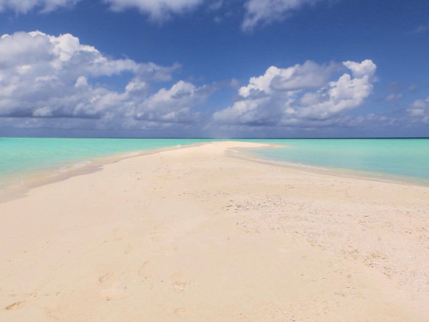
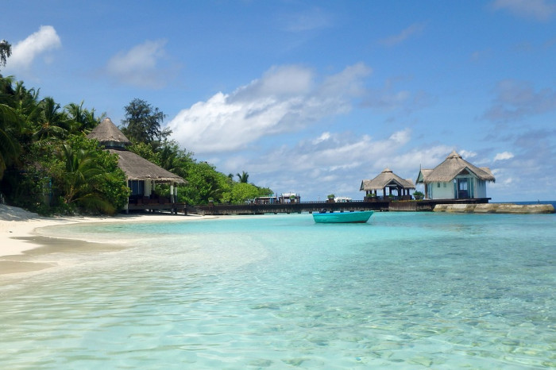

2025年4大人生必去夢想旅遊目的地
馬爾代夫
馬爾地夫的海面上有許多的無人島、沙洲，這都是來到馬爾地夫不可錯過的景點，而沙洲經過海浪的洗禮，會出現不同的造型，大家可以找時間去無人島或沙洲走走，可以請飯店服務人員或是船家推薦值得一次的無人島和沙洲喔。

維利甘度島海灘是個美到像仙境一樣的地方，清澈的海水讓人讚嘆，而且還可以看到五彩繽紛的魚類在優游。附近正是個度假村，住在這裡更可以輕鬆享受美麗的海灘。
到旭日初升，Mykonos的日出在希臘的白色風車襯托下更顯得夢幻浪漫，無論您是經歷了徹夜狂歡還是專程早起等待美景，這一片日出絕對會讓你精神振奮。
夢幻的天堂島絕對是馬爾地夫必去，天堂島是馬爾地夫著名的度假島嶼，不枉費它被稱為天堂島，這裡像就仙境一樣，到了夕陽西落時，清澈的海水染上金黃色光芒非常美！島上有許多渡假村可以居住，更可以體驗各種豐富的水上活動。

現在馬爾地夫許多店家用美金也可消費，如果馬爾地夫待的天數不長不一定要換Rufiyaa。可帶小面額的美金紙鈔當小費和小額消費用。